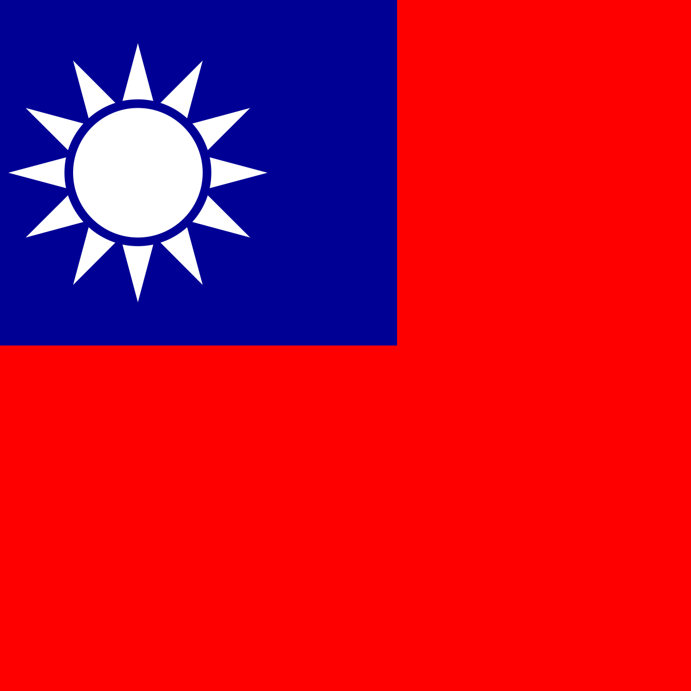

修.png)
伊朗—哈達迪
哈米德·哈達迪（波斯語：حامد حدادی，英語：Hamed E.
Haddadi，1985年5月19日－），出生於伊朗胡齊史丹省阿瓦士，伊朗職業籃球運動員，曾效力於美國NBA的曼非斯灰熊、鳳凰城太陽，中國CBA的青島雙星、四川金強等隊。場上場上位置為中鋒，身高2.18米，體重120公斤。
哈達迪是第一位進軍NBA的伊朗運動員，也是繼貝哈德·薩米（Behdad Sami）之後第二位在美國職業聯賽打球的伊朗運動員。
 修.png)
巴勒斯坦—桑尼
桑尼·薩卡基尼，出生於1988年8月19日，司職大前鋒，效力於CBA廣州龍獅籃球俱樂部。
對於巴勒斯坦而言，桑尼是不折不扣的籃球第一人，他多次榮膺約旦聯賽籃板王、扣籃王頭銜，併入選最佳陣容。四年前就曾在中國效力的桑尼，對於重回CBA也是充滿信心，目前效力天津榮鋼男籃榮寶支付隊。
2017年6月27日廣州龍獅籃球俱樂部官方對外宣布，球隊與前天津隊亞洲外援、巴勒斯坦名將桑尼·薩卡基尼正式簽約。
 修.png)
韓國—金善亨
金善亨綽號韓國小跑車，是2011年韓國職籃KBL的選秀榜眼，今年已經30歲，職業生涯都待在首爾SK騎士隊。
他在菜鳥球季就獲得教練團信任，一共先發了38場比賽，平均上場31.5分鐘可貢獻14.8分3.3助攻2.9籃板。進入第二個賽季，金善亨的得分雖略為下降，不過他把助攻數提升到4.8次，最後更獲選為該年度的例行賽最有價值球員。
 修.png)
 台灣—林志傑
林志傑（1982年6月11日－），出生於中華民國臺灣花蓮縣，現效力於CBA聯盟的浙江廣廈，場上位置為小前鋒、得分後衛。外號「野獸」、「亞洲第一小前鋒」、「CBA戰神」。曾效力於台灣啤酒籃球隊，並帶領球隊拿下二連霸。
林志傑是現今台灣男子籃壇得分能力最強的選手之一，尤以遠距離三分球投射、灌籃、後仰跳投及單打突破能力著稱，是SBL第一屆（2003－2004）及第二屆（2004－2005）的「得分王」，也是隊上的靈魂人物和精神支柱。
 修.png)
菲律賓—羅密歐
羅密歐在球場上司職控球後衛，然而傳球並非他的強項，在PBA（菲律賓職業籃球聯賽）6年職業生涯平均每場只能傳出3.7次助攻。不過論得分能力那大概沒有人比得過他，羅密歐在2015-16、16-17球季場均攻下24.8分和23.1分，連續兩季拿下得分王，同時也在這兩年奪下三分球大賽冠軍。能投又能切的他在國內聯賽無人能擋，放到國際賽上也是同樣的情況。
 修.png)
黎巴嫩—法迪
法迪·艾爾·卡提布（英語：Fadi El Khatib，阿拉伯語：فادي
الخطيب，1979年1月1日－），黎巴嫩職業籃球運動員，身高1米96，現效力於黎巴嫩國內的藍星俱樂部(Blue Stars)，司職鋒衛搖擺人。
他是2006年8月日本世錦賽黎巴嫩男子籃球國家隊的成員，卡提布成為這屆錦標賽得分第七多的選手，平均每場得到18分。他在世錦賽中的表現可以影響到整隊的發揮。
 修.png)
 中國—易建聯
中國—易建聯
易建聯於2002年選入中國男子籃球職業聯賽的廣東宏遠隊及中國國家籃球青年隊，於2004年入選中國國家男子籃球隊。2004年至2006年幫助廣東隊總冠軍三連霸。2005年成為CBA史上最年輕的最有價值球員，當時被視為中國最具有潛力的新人。2007年NBA選秀中被密爾瓦基公鹿以第六順位選中，先後效力於公鹿、籃網、巫師、小牛、湖人等隊，在2012年重新返回廣東東莞銀行隊及幫助廣東隊再獲CBA總冠軍。
 修.png)
日本—八村壘
八村壘的媽媽是日本人，爸爸是西非的貝南共和國人，在日本富山縣出生，小學時打了5年棒球，上了國中才開始接觸籃球，2014年他在U17世青對美國單場拿下25分，最後也以場均22.6分的成績，拿下該屆比賽得分王，一戰成名，隨後加入NCAA一級岡薩加大學，大三賽季場均19.7分、6.5籃板，被評價為「日本籃壇救世主」。
 修.png)
日本—渡邊雄太
身高206公分的渡邊雄太主打前鋒，有著相當穩定的三分外圍投射能力和出色的防守，同時還擁有一般亞洲高個子球員沒有的移動能力。渡邊在高中畢業後被喬治華盛頓大學相中，成為日本第四位能夠加入NCAA一級學校的球員。而他在大學期間年年都有長足的進步。大四那年他33場先發出賽，場均攻得16.3分6.1籃板1.6助攻，更難能可貴的是他每場可搧出1.6個火鍋，也讓他獲選為大西洋十校聯盟的年度最佳防守球員。